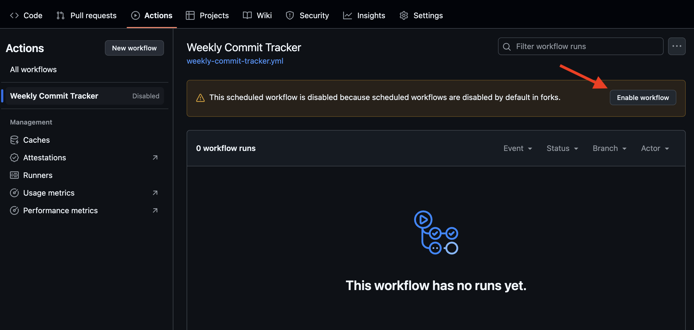

🔥 위클리 커밋 챌린지
꾸준히 커밋하는 습관을 기록하고 추적해보세요!
지금 참여하면 이번 주부터 기록이 시작됩니다
🤔 생각보다 쉽지 않을 걸요? 매주 커밋할 자신 있나요?
총 참여자
-
주간 성공자
-
평균 성공률
-
평균 연속 주차
-
📊 동적 카드 임베딩
실시간으로 업데이트되는 카드를 README나 웹사이트에 임베드할 수 있습니다!
카드 예시
사용법
<iframe src="https://tlqhrm.github.io/weekly-commit-challenge/card-proxy.html?username=YOUR_USERNAME"
width="400" height="130" frameborder="0"></iframe>
실시간 업데이트
자동 동기화
성과별 색상 변화
🏅 참여자 랭킹
랭킹을 불러오는 중...
👤 내 참여 현황
예: tlqhrm 또는 https://github.com/tlqhrm
📝 참여 방법
2
GitHub Actions 활성화
Fork한 레포지토리의 Actions 탭에서 워크플로우를 활성화하세요.
Repository → Actions → "I understand my workflows, go ahead and enable them"
📸 워크플로우 활성화 가이드
1단계: Actions 활성화 허용

"I understand my workflows, go ahead and enable them" 버튼을 클릭하여 Actions를 허용하세요.
2단계: 워크플로우 활성화
"Weekly Commit Tracker" 워크플로우의 "Enable workflow" 버튼을 클릭하여 활성화하세요.
3
일주일에 한 번 커밋하기!
매일 오전 9시, 오후 9시에 자동으로 실행되어 지난 일주일간의 커밋을 체크하고 기록합니다.
✅ 일주일에 한 번만 커밋해도 성공 기록!
📋 record.md에 참여 내역이 테이블로 누적됩니다
💪 "매주 한 번쯤은 커밋할 수 있지 뭐" 라고 생각하시나요?
⏰ 실제로는 2주만 지나도 깜빡하기 쉬워요!
🎯 진짜 개발자라면 꾸준함을 증명해보세요!
📝 참여 기록 예시
| 기간 | 주차 | 커밋 수 | 성공 여부 |
|---|---|---|---|
| 2025-01-01 ~ 2025-01-07 | 1주차 | 5 | ✅ 성공 |
| 2025-01-08 ~ 2025-01-14 | 2주차 | 3 | ✅ 성공 |
| 2025-01-15 ~ 2025-01-21 | 3주차 | 0 | ❌ 실패 |
✨ 간단한 참여 방법
빠른 시작
Fork 후 Actions 활성화만 하면 완료
자동 기록
매주 커밋 내역이 테이블로 자동 누적
지속적 추적
주차별 성공/실패 기록을 한눈에 확인
⚙️ 워크플로우 작동 방식
실행 주기
- 매일 오전 9시, 오후 9시 (KST) 자동 실행
- 수동 실행 가능 (GitHub Actions → "Run workflow")
커밋 집계 대상
- 본인 계정의 공개 레포지토리만 수집
- weekly-commit-challenge 레포지토리는 제외
- 봇이 작성한 커밋은 제외 (예: dependabot, renovate 등)
통계 및 랭킹 업데이트
- 통계 데이터와 참여자 랭킹은 매시간마다 자동으로 갱신됩니다